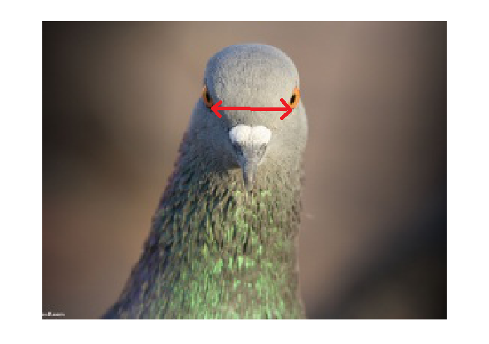

Workshop
Summarising data in with several variables and the role of variables in analysis
Introduction

Session overview
In this workshop you will learn to summarise and plot datasets with more than one variable and how to write figures to files. You will also get more practice with working directories, importing data, formatting figures and the pipe.
Philosophy
Workshops are not a test. It is expected that you often don’t know how to start, make a lot of mistakes and need help. It is expected that you are familiar with independent study content before the workshop. However, you need not remember or understand every detail as the workshop should build and consolidate your understanding. Tips
- don’t worry about making mistakes
- don’t let what you can not do interfere with what you can do
- discussing code with your neighbours will help
- look things up in the independent study material
- look things up in your own code from earlier workshops
- there are no stupid questions
These four symbols are used at the beginning of each instruction so you know where to carry out the instruction.
 Something you need to do on your computer. It may be opening programs or documents or locating a file.
Something you need to do on your computer. It may be opening programs or documents or locating a file.
 Something you should do in RStudio. It will often be typing a command or using the menus but might also be creating folders, locating or moving files.
Something you should do in RStudio. It will often be typing a command or using the menus but might also be creating folders, locating or moving files.
 Something you should do in your browser on the internet. It may be searching for information, going to the VLE or downloading a file.
Something you should do in your browser on the internet. It may be searching for information, going to the VLE or downloading a file.
 A question for you to think about and answer. Record your answers in your script for future reference.
A question for you to think about and answer. Record your answers in your script for future reference.
Getting started
Start RStudio from the Start menu.
Make an RStudio project for this workshop by clicking on the drop-down menu on top right where it says Project: (None) and choosing New Project, then New Directory, then New Project. Navigate to the data-analysis-in-r-1 folder and name the RStudio Project ‘week-4’.
Make a new folder called data-raw. You can do this on the Files Pane by clicking New Folder and typing into the box that appears.
Make a new script then save it with a name like analysis.R to carry out the rest of the work.
Add a comment to the script: # Summarising data in with several variables and the role of variables in analysis
Add code to load the tidyverse package (Wickham et al. 2019)
Exercises
You are going to practice how to summarise and plot data as follows:
- one continuous response and one nominal explanatory variable with three groups
- one continuous response and one nominal explanatory variable with two groups but the supplied data first need converting to tidy format
- two continuous variables
Note that the Independent Study to prepare for workshop covered one continuous response and one nominal explanatory variable with two groups.
Myoglobin in seal muscle
The myoglobin concentration of skeletal muscle of three species of seal in grams per kilogram of muscle was determined and the data are given in seal.csv. Each row represents an individual seal. The first column gives the myoglobin concentration and the second column indicates species.
Import
Save seal.csv to your data-raw folder
Read the data into a dataframe called seal. . You might want to look up data import from last week.
What types of variables do you have in the seal dataframe? What role would you expect them to play in analysis?
The key point here is that the fundamental structure of:
one continuous response and one nominal explanatory variable with two groups (adipocytes), and
one continuous response and one nominal explanatory variable with three groups (seals)
is the same! The only thing that differs is the number of groups (the number of values in the nominal variable). This means the code for summarising and plotting is identical except for the variable names!
When two datasets have the same number of columns and the response variable and the explanatory variables have the same data types then the code you need is the same.
Summarise
Summarising the data for each species is the next sensible step. The most useful summary statistics for a continuous variable like myoglobin are the means, standard deviations, sample sizes and standard errors. You might remember from last week that we use the group_by() and summarise() functions along with the functions that do the calculations.
Create a data frame called seal_summary that contains the means, standard deviations, sample sizes and standard errors for the control and nicotinic acid treated samples.
You should get the following numbers:
| species | mean | std | n | se |
|---|---|---|---|---|
| Bladdernose Seal | 42.31600 | 8.020634 | 30 | 1.464361 |
| Harbour Seal | 49.01033 | 8.252004 | 30 | 1.506603 |
| Weddell Seal | 44.66033 | 7.849816 | 30 | 1.433174 |
Visualise
Most commonly, we put the explanatory variable on the x axis and the response variable on the y axis. A continuous response, particularly one that follows the normal distribution, is best summarised with the mean and the standard error. In my opinion, you should also show all the raw data points if possible.
We are going to create a figure like this:

In this figure, we have the data points themselves which are in seal dataframe and the means and standard errors which are in the seal_summary dataframe. That is, we have two dataframes we want to plot.
Here you will learn that dataframes and aesthetics can be specified within a geom_xxxx (rather than in the ggplot()). This is very useful if the geom only applies to some of the data you want to plot.
ggplot()
You put the data argument and aes() inside ggplot() if you want all the geoms to use that dataframe and variables. If you want a different dataframe for a geom, put the data argument and aes() inside the geom_xxxx()
I will build the plot up in small steps but you should edit your existing ggplot() command as we go.
Plot the data points first.
ggplot() +
geom_point(data = seal,
aes(x = species, y = myoglobin))
Notice how we have given the data argument and the aesthetics inside the geom. The variables species and myoglobin are in the seal dataframe
So the data points don’t overlap, we can add some random jitter in the x direction (edit your existing code):
ggplot() +
geom_point(data = seal,
aes(x = species, y = myoglobin),
position = position_jitter(width = 0.1, height = 0))
Note that position = position_jitter(width = 0.1, height = 0) is inside the geom_point() parentheses, after the aes() and a comma.
We’ve set the vertical jitter to 0 because, in contrast to the categorical x-axis, movement on the y-axis has meaning (the myoglobin levels).
Let’s make the points a light grey (edit your existing code):
ggplot() +
geom_point(data = seal,
aes(x = species, y = myoglobin),
position = position_jitter(width = 0.1, height = 0),
colour = "grey50")
Now to add the errorbars. These go from one standard error below the mean to one standard error above the mean.
Add a geom_errorbar() for errorbars (edit your existing code):
ggplot() +
geom_point(data = seal, aes(x = species, y = myoglobin),
position = position_jitter(width = 0.1, height = 0),
colour = "grey50") +
geom_errorbar(data = seal_summary,
aes(x = species, ymin = mean - se, ymax = mean + se),
width = 0.3) 
We have specified the seal_summary dataframe and the variables species, mean and se are in that.
There are several ways you could add the mean. You could use geom_point() but I like to use geom_errorbar() again with the ymin and ymax both set to the mean.
Add a geom_errorbar() for the mean (edit your existing code):
ggplot() +
geom_point(data = seal, aes(x = species, y = myoglobin),
position = position_jitter(width = 0.1, height = 0),
colour = "grey50") +
geom_errorbar(data = seal_summary,
aes(x = species, ymin = mean - se, ymax = mean + se),
width = 0.3) +
geom_errorbar(data = seal_summary,
aes(x = species, ymin = mean, ymax = mean),
width = 0.2)
Alter the axis labels and limits using scale_y_continuous() and scale_x_discrete() (edit your existing code):
ggplot() +
geom_point(data = seal, aes(x = species, y = myoglobin),
position = position_jitter(width = 0.1, height = 0),
colour = "grey50") +
geom_errorbar(data = seal_summary,
aes(x = species, ymin = mean - se, ymax = mean + se),
width = 0.3) +
geom_errorbar(data = seal_summary,
aes(x = species, ymin = mean, ymax = mean),
width = 0.2) +
scale_y_continuous(name = "Myoglobin (g/kg)",
limits = c(0, 80),
expand = c(0, 0)) +
scale_x_discrete(name = "Species")
You only need to use scale_y_continuous() and scale_x_discrete() to use labels that are different from those in the dataset. Often this is to use proper terminology and captialisation.
Format the figure in a way that is more suitable for including in a report using theme_classic() (edit your existing code):
ggplot() +
geom_point(data = seal, aes(x = species, y = myoglobin),
position = position_jitter(width = 0.1, height = 0),
colour = "grey50") +
geom_errorbar(data = seal_summary,
aes(x = species, ymin = mean - se, ymax = mean + se),
width = 0.3) +
geom_errorbar(data = seal_summary,
aes(x = species, ymin = mean, ymax = mean),
width = 0.2) +
scale_y_continuous(name = "Myoglobin (g/kg)",
limits = c(0, 80),
expand = c(0, 0)) +
scale_x_discrete(name = "Species") +
theme_classic()
Writing figures to file
Make a new folder called figures.
Edit you ggplot code so that you assign the figure to a variable.
sealfig <- ggplot() +
geom_point(data = seal, aes(x = species, y = myoglobin),
position = position_jitter(width = 0.1, height = 0),
colour = "grey50") +
geom_errorbar(data = seal_summary,
aes(x = species, ymin = mean - se, ymax = mean + se),
width = 0.3) +
geom_errorbar(data = seal_summary,
aes(x = species, ymin = mean, ymax = mean),
width = 0.2) +
scale_y_continuous(name = "Myoglobin (g/kg)",
limits = c(0, 80),
expand = c(0, 0)) +
scale_x_discrete(name = "Species") +
theme_classic()The figure won’t be shown in the Plots tab - the output has gone into sealfig rather than to the Plots tab. To make it appear in the Plots tab type sealfig
The ggsave() command will write a ggplot figure to a file:
ggsave("figures/seal-muscle.png",
plot = sealfig,
device = "png",
width = 4,
height = 3,
units = "in",
dpi = 300)figuresseal-muscle.png is the name of the file, including the relative path.
Look up ggsave() in the manual to understand the arguments. You can do this by putting your cursor on the command and pressing F1
Pigeons
The data in pigeon.txt are 40 measurements of interorbital width (in mm) for two populations of domestic pigeons measured to the nearest 0.1mm

Import
Save pigeon.txt to your data-raw folder
Read the data into a dataframe called pigeons.
What variables are there in the pigeons dataframe?
Hummmm, these data are not organised like the other data sets we have used. The population is given as the column names and the interorbital distances for one population are given in a different column than those for the other population. The first row has data from two pigeons which have nothing in common, they just happen to be the first individual recorded in each population.
| A | B |
|---|---|
| 12.4 | 12.6 |
| 11.2 | 11.3 |
| 11.6 | 12.1 |
| 12.3 | 12.2 |
| 11.8 | 11.8 |
| 10.7 | 11.5 |
| 11.3 | 11.2 |
| 11.6 | 11.9 |
| 12.3 | 11.2 |
| 10.5 | 12.1 |
| 12.1 | 11.9 |
| 10.4 | 10.7 |
| 10.8 | 11.0 |
| 11.9 | 12.2 |
| 10.9 | 12.6 |
| 10.8 | 11.6 |
| 10.4 | 10.7 |
| 12.0 | 12.4 |
| 11.7 | 11.8 |
| 11.3 | 11.1 |
| 11.5 | 12.9 |
| 11.8 | 11.9 |
| 10.3 | 11.1 |
| 10.3 | 12.2 |
| 11.5 | 11.8 |
| 10.7 | 11.5 |
| 11.3 | 11.2 |
| 11.6 | 11.9 |
| 13.3 | 11.2 |
| 10.7 | 11.1 |
| 12.1 | 11.6 |
| 10.2 | 12.7 |
| 10.8 | 11.0 |
| 11.4 | 12.2 |
| 10.9 | 11.3 |
| 10.3 | 11.6 |
| 10.4 | 12.2 |
| 10.0 | 12.4 |
| 11.2 | 11.3 |
| 11.3 | 11.1 |
This data is not in ‘tidy’ format (Wickham 2014).
Tidy format has variables in column and observations in rows. All of the distance measurements should be in one column and a second column should give the population.
| population | distance |
|---|---|
| A | 12.4 |
| B | 12.6 |
| A | 11.2 |
| B | 11.3 |
| A | 11.6 |
| B | 12.1 |
| A | 12.3 |
| B | 12.2 |
| A | 11.8 |
| B | 11.8 |
| A | 10.7 |
| B | 11.5 |
| A | 11.3 |
| B | 11.2 |
| A | 11.6 |
| B | 11.9 |
| A | 12.3 |
| B | 11.2 |
| A | 10.5 |
| B | 12.1 |
| A | 12.1 |
| B | 11.9 |
| A | 10.4 |
| B | 10.7 |
| A | 10.8 |
| B | 11.0 |
| A | 11.9 |
| B | 12.2 |
| A | 10.9 |
| B | 12.6 |
| A | 10.8 |
| B | 11.6 |
| A | 10.4 |
| B | 10.7 |
| A | 12.0 |
| B | 12.4 |
| A | 11.7 |
| B | 11.8 |
| A | 11.3 |
| B | 11.1 |
| A | 11.5 |
| B | 12.9 |
| A | 11.8 |
| B | 11.9 |
| A | 10.3 |
| B | 11.1 |
| A | 10.3 |
| B | 12.2 |
| A | 11.5 |
| B | 11.8 |
| A | 10.7 |
| B | 11.5 |
| A | 11.3 |
| B | 11.2 |
| A | 11.6 |
| B | 11.9 |
| A | 13.3 |
| B | 11.2 |
| A | 10.7 |
| B | 11.1 |
| A | 12.1 |
| B | 11.6 |
| A | 10.2 |
| B | 12.7 |
| A | 10.8 |
| B | 11.0 |
| A | 11.4 |
| B | 12.2 |
| A | 10.9 |
| B | 11.3 |
| A | 10.3 |
| B | 11.6 |
| A | 10.4 |
| B | 12.2 |
| A | 10.0 |
| B | 12.4 |
| A | 11.2 |
| B | 11.3 |
| A | 11.3 |
| B | 11.1 |
Data which is in tidy format is easier to summarise, analyses and plot because the organisation matches the conceptual structure of the data:
- it is more obvious what the variables are because they columns are named with them - in the untidy format, that the measures are distances is not clear and what A and B are isn’t clear
- it is more obvious that there is no relationship between any of the pigeons except for population
- functions are designed to work with variables in columns
Tidying data
We can put this data in such a format with the pivot_longer() function from the tidyverse:
pivot_longer() collects the values from specified columns (cols) into a single column (values_to) and creates a column to indicate the group (names_to).
Put the data in tidy format:
pigeons <- pivot_longer(data = pigeons,
cols = everything(),
names_to = "population",
values_to = "distance")We have overwritten the original dataframe. If you wanted to keep the original you would need to give a new name on the left side of the assignment <- Note: the data in the file are unchanged.
Ulna and height
The datasets we have used up to this point, have had a continuous variable and a categorical variable where it makes sense to summarise the response for each of the different groups in the categorical variable and plot the response on the y-axis. We will now summarise a dataset with two continuous variables. The data in height.txt are the ulna length (cm) and height (m) of 30 people. In this case, it is more appropriate to summarise both of thee variables and to plot them as a scatter plot.
We will use summarise() again but we do not need the group_by() function this time. We will also need to use each of the summary functions, such as mean(), twice, once for each variable.
Import
Save height.txt to your data-raw folder
Read the data into a dataframe called ulna_heights.
Summarise
Create a data frame called ulna_heights_summary that contains the sample size and means, standard deviations and standard errors for both variables.
You should get the following numbers:
| n | mean_ulna | std_ulna | se_ulna | mean_height | std_height | se_height |
|---|---|---|---|---|---|---|
| 30 | 24.72 | 4.137332 | 0.75537 | 1.494 | 0.2404823 | 0.0439059 |
Visualise
To plot make a scatter plot we need to use geom_point() again but without any scatter. In this case, it does not really matter which variable is on the x-axis and which is on the y-axis.
Make a simple scatter plot
ggplot(data = ulna_heights, aes(x = ulna, y = height)) +
geom_point()
If you have time, you may want to format the figure more appropriately.
You’re finished!
🥳 Well Done! 🎉

Independent study following the workshop
The Code file
This contains all the code needed in the workshop even where it is not visible on the webpage.
The workshop.qmd file is the file I use to compile the practical. Qmd stands for Quarto markdown. It allows code and ordinary text to be interweaved to produce well-formatted reports including webpages. View the Qmd in Browser. Coding and thinking answers are marked with #---CODING ANSWER--- and #---THINKING ANSWER---
Pages made with R (R Core Team 2023), Quarto (Allaire et al. 2022), knitr (Xie 2022), kableExtra (Zhu 2021)